Поддерживаются шесть вариантов многопользовательской игры:
Кампания - это цепочка из нескольких миссий, каждая из которых идет строго одна за одной. Предлогается на выбор кампании соответствующих версий игры (Возрождение Эрафии, Клинок Армагеддона или Дыханье Смерти), или же Вы можете загрузить скачанную из интернета.
В случае если Вы выбрали стандартную кампанию из игры, то что бы пройти полностью все кампании, необходимо поочередно проходить каждую из доступных. Обычно перед началом кампании, предлагается на выбор один из бонусов установленных автором. Помимо этого может быть установлено ограничение на уровень героя. Если Вы хотите скачать кампанию, загляните в раздел с картами.
При одиночной игре прежде выбирается карта. Каждая карта имеет некоторый набор параметров:
Каждая карта имеет размер, который определяется количеством ячеек по высоте и длине.
| Размер | Параметры | |
| Маленькая | 32x32 | |
| Средняя | 72x72 | |
| Большая | 108x108 | |
| Очень большая | 144x144 |
Каждая карта создана в той или иной версии игры, отличием между ними является наличием разных дополонительных объектов и артефактов.
| Возрождение Эрафии | |
| 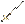 | Клинок армагеддона |
| Дыхание смерти |
В игре кроме стандартных условий поражения (потерять все замки и всех героев), могут быть и дополнительные условия поражения.
Специальные условия поражения
| Потерять все свои города и всех героев | |
| Потеря определённого города | |
| 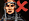 | Потеря определённого героя |
| Не успеть вовремя |
Специальные условия победы
| Победить всех | |
| Найти артефакт | |
| 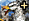 | Набрать существ |
| 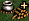 | Набрать ресурсы |
| Улучшить город | |
| 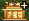 | Построить храм Грааля |
| 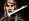 | Победить героя |
| Захватить город | |
| Победить монстра | |
| Захватить жилища всех созданий | |
| 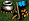 | Захватить все шахты |
| Доставить артефакт |
Здесь если это разрешено, можно выбрать:
Сложность игры в большей степени определяется наличием ресурсов, как у игрока так и у компьютера.
| 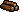 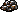 игрока | компъютера | игрока | компъютера | игрока | компъютера | Сила компьютера(% от максимума) | |
| Легкая (80%) | 30 | 5 | 15 | 2 | 30000 | 5000 | 50%1 |
| Нормальная (100%) | 20 | 4 | 10 | 10 | 20000 | 7500 | 75%1 |
| Высокая (130%) | 15 | 15 | 7 | 7 | 15000 | 10000 | 100%1 |
| Эксперт (160%) | 10 | 15 | 4 | 7 | 10000 | 10000 | 100%1 |
| Нереальная (200%) | 0 | 15 | 0 | 7 | 0 | 10000 | 100%1 |
Плюс к этому компьютерный противник имеет дополнительный бонус по всем ресурсам в течение всего периода игры.
| Сложность | |||
| 80% | -25% | - | - |
| 100% | - | - | - |
| 130% | - | - | - |
| 160% | +25% | +39% | +14% |
| 200% | +50% | +53% | +28% |
Например: средневзвешенный недельный доход компьютерного игрока составил 34 единицы дерева. Бонус в этом случае на уровне сложности 200% составит 18 единиц, которые равномерно распределятся по всем семи игровым дням недели (округления - до целого).
Также исходя из этого стартовый дневной доход замка компъютера в зависимости от сложности будет составлять: 375 (80%), 500 (100%), 500 (130%), 625 (160%) и 750 (200%) золотых, в то время как у игрока он всегда равен 500 золотым.
Ресурсы являются одним из основных компонентов игры, без них нельзя ни построить здание, ни нанять войско. Как уже известно в игре существует 7 видов ресурсов, все их можно поделить на 3 группы:
Ресурсы игры
| Ресурс | Название |
| 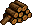 | Дерево |
| 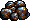 | Руда |
| 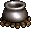 | Ртуть |
| Сера | |
| 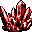 | Кристалы |
| 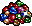 | Самоцветы |
| 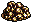 | Золото |
Шахты в игре
| Шахта | Прибыль |
| 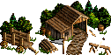 Лесопилка | 2 в день |
| 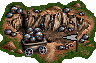 Шахта руды | 2 в день |
| 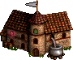 Лаборатория алхимика | 1 в день |
| 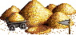 Залежи серы | 1 в день |
| 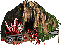 Пещера кристалов | 1 в день |
| 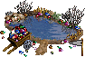 Пруд драгоценных камней | 1 в день |
| 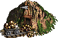 Золотая шахта | 1000 в день |
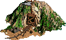
Помимо указанных выше шахт, существует ещё и Заброшенная шахта. Прежде чем она начнет работать в обычном режиме, нужно уничтожить поселившихся в ней троглодитов (100-249). До тех пор, пока игрок не посетит освобожденную Заброшенную шахту, он не знает, какой вид ресурса в ней добывается. Единственный ресурс, который не могут давать заброшенные шахты, - это дерево.
Получить ресурсы, можно посещая различные объекты на карте.
Объекты дающие ресурсы
| 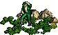 Мистический Сад | 50% вероятность получить 500 ;
50% вероятность получить 5 |
| 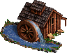 Водяная Мельница | На первой неделе дает 500 ;
в остальные недели 1000 |
| 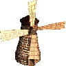 Ветряная мельница | от 3 до 6 любого ресурса, кроме и |
| 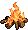 Кострище покинутого лагеря | 400-600 и 4-6 случайно выбранного ресурса |
| 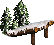 Навес | 1-5 любого ресурса кроме . |
| 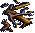 Обломки Кораблекрушения | 25% вероятность получить 5 ;
25% вероятность получить 5 и 200 ; 25% вероятность получить 10 и 500 ; 25% вероятность найти пустые обломки |
Одержав победу над монстрами-охранниками сокровищницы, вы получаете сокровище, которое они охраняли. При битве в сокровищницах расстановка Ваших войск на поле выглядит следующим образом:
| 1 | 2 | |||
| 3 | 4 | 5 | ||
| 6 | 7 |
Очередность вступления в бой охранников следующая:
| 4 | 1 | |||
| 5 | ||||
| 3 | 2 |
Сокровищницы ресурсов
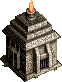 Тайник Бесов
| Вероятность | Охрана | Награда | Коэффициент сложности битвы по отношению к самому легкому |
| 30% | 100 бесов | 1000 , 2 | 1,00 |
| 30% | 150 бесов | 1200 , 3 | 1,50 |
| 30% | 200 бесов | 2000 , 4 | 2,00 |
| 10% | 300 бесов | 3000 , 6 | 3,00 |
| Вероятность | Охрана | Награда | Коэффициент сложности битвы по отношению к самому легкому |
| 30% | 50 гномов | 2500 , 2 | 1,00 |
| 30% | 75 гномов | 4000 , 3 | 1,50 |
| 30% | 100 гномов | 5000 , 5 | 2,00 |
| 10% | 150 гномов | 7500 , 10 | 3,00 |
| Вероятность | Охрана | Награда | Коэффициент сложности битвы по отношению к самому легкому |
| 30% | 20 медуз | 2000 , 5 | 1,00 |
| 30% | 30 медуз | 3000 , 6 | 1,50 |
| 30% | 40 медуз | 4000 , 8 | 2,00 |
| 10% | 50 медуз | 5000 , 10 | 2,50 |
| Вероятность | Охрана | Награда | Коэффициент сложности битвы по отношению к самому легкому |
| 30% | 20 циклопов | 4 | 1,00 |
| 30% | 30 циклопов | 6 | 1,50 |
| 30% | 40 циклопов | 8 | 2,00 |
| 10% | 50 циклопов | 10 | 2,50 |
| Вероятность | Охрана | Награда | Коэффициент сложности битвы по отношению к самому легкому |
| 30% | 10 наг | 4000 , 8 | 1,00 |
| 30% | 15 наг | 6000 , 12 | 1,50 |
| 30% | 20 наг | 8000 , 16 | 2,00 |
| 10% | 30 наг | 12000 , 24 | 3,00 |
Также непосредственно золото, можно получить в объектах дающие артефакты
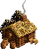
Рынок - позволяет обменивать ресурсы. Чем больше рынков построено у вас в городах тем выгоднее курс обмена. Два рынка уменьшают стандартную цену артефакта на 20%, три - на 33%, четыре - на 43%, пять - на 50%, шесть - на 56%, семь - на 60%, восемь - на 64%, девять - на 67%. Большее количество рынков не дает дополнительных скидок.
| меняю | на | 1 | 2 | 3 | 4 | 5 | 6 | 7 | 8 | 9 |
| 1/10 | 1/7 | 1/5 | 1/4 | 1/3 | 1/3 | 1/3 | 1/2 | 1/2 | ||
| 1/10 | 1/7 | 1/5 | 1/4 | 1/3 | 1/3 | 1/3 | 1/2 | 1/2 | ||
| 1/20 | 1/13 | 1/10 | 1/8 | 1/7 | 1/6 | 1/5 | 1/4 | 1/4 | ||
| 1/5 | 1/3 | 1/3 | 1/2 | 1/2 | 1/1 | 1/1 | 1/1 | 1/1 | ||
| 25 | 37 | 50 | 62 | 75 | 88 | 100 | 112 | 125 | ||
| 50 | 75 | 100 | 125 | 150 | 175 | 200 | 225 | 250 | ||
| 2500 | 1667 | 1250 | 1000 | 833 | 714 | 625 | 556 | 500 | ||
| 5000 | 3333 | 2500 | 2000 | 1667 | 1429 | 1250 | 1111 | 1000 |
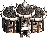
Гильдия Наемных Работников - позволяет обменять существ героя посетившего её на ресурсы. За ваших существ предлагают 70% от номинальной цены (учитывается только золото). Чтобы перевести эту сумму в количество Серы, Ртути, Самоцветов или Кристаллов, нужно разделить ее на 500. Для Дерева и Руды - на 250. Может быть розмещена на карте приключений, или построена в замке "Цитадель".
В игре есть ряд героев, специализация которых заключается в пополненни казны соответствующим ресурсом. Полный список героев приносящих ресурсы:
Ежедневно приносят 350 в день: Аин, Гриндан, Дамакон, Джелар, Енова, Каитлин, Клавиус, Нагаш, Октавия;
Ежедневно приносят 1 в день: Ризза;
Ежедневно приносят 1 в день: Сауруг;
Ежедневно приносят 1 в день: Сепхинороф;
Ежедневно приносят 1 в день: Калид.
Так же герой может изучить вторичный навык имущество, который приносит небольшую сумму золота каждый день.
Если в Вашей армии есть кристальные драконы, то их специализация приносить в начале каждой недели 3 , количество драконов не влияет на количество кристалов.
Запас хода - рассчитывается в начале хода. Т.е. если герой начал день с Архангелами и Сапогами-Скороходами, а потом отдал их другому герою и взял вместо них гномов, на запасе хода это никак не отразится. За исключением случая, когда существует штраф местности, когда для юнитов в армии героя местность является "чужой" - т.е. если у героя в начале дня на болоте были Капитаны кентавров, для которых болото - чужая местность, то в начале дня можно уволить/передать кентавров и тем самым избавиться от штрафа на местности.
При движении по земле скорость героя зависит от SCS - Slowest Creature Speed (Скорость Самого Медленного Юнита). Для хранения параметров Герои вообще не используют дробных чисел, запас хода считается в единицах, в оригинале называемых movement points или MP. Вот таблица соответствия:
| SCS | Очки движения (МР) |
| 0 | 1300 |
| 1 | 1360 |
| 2 | 1430 |
| 3 | 1500 |
| 4 | 1560 |
| 5 | 1630 |
| 6 | 1700 |
| 7 | 1760 |
| 8 | 1830 |
| 9 | 1900 |
| 10 | 1960 |
| 11 и выше | 2000 |
Если вы купили в таверне героя Киррь (например) с одним кентавром (SCS=6), а он ползает медленнее любого еретика с одним импом (SCS=5), не удивляйтесь и не расстраивайтесь - это всего лишь в первый день. Все дело в том, что в ранних версиях HoMM III ВСЕ герои при покупке имели начальную армию. Баг этот был быстро устранен... но не полностью: Скорость героя при покупке все равно рассчитывается как если бы у героя была эта начальная армия. Угадать, какая же начальная армия подразумевается (!) в каждом конкретном случае, невозможно. Однако, из таблицы HoTraits.txt можно сделать вывод, что вышеописанных неприятных сюрпризов точно не будет у следующих героев: Ивор, Джем, Пигедрам, Галтран, Лорелей, Тираксор, Монер, Пасис, Валеска.
Ранее уволенные или проигравшие битву (побег и капитуляция не считаются) герои, в день найма имеют базовый запас хода 2000 МР. Герои без существ имеют базовый запас хода 2000 МР.
Примечания:
В зависимости от развития вторичного навыка "Логистика" базовый мувмент героя увеличивается на:
| Уровень | Бонус |
| Базовый | 10% |
| Продвинутый | 20% |
| Эксперт | 30% |
[Бонус Логистики]*[Уровень героя]*0.05
Базовый мувмент героя на воде зависит от вторичного навыка "Навигация" (на один ход тратится 100 mp):
| Уровень | Очки движения (MP) | Бонус (MP) |
| Нет | 1500 | 0 |
| Базовый | 2250 | +750 |
| Продвинутый | 3000 | +1500 |
| Эксперт | 3750 | +2250 |
[Movement - 1500]*[Уровень героя]*0.05
Попутный ветер: увеличивает скорость передвижения по морю на 50% (снижает расход MP в два раза).
Шляпа Адмирала - достаточно спорный артефакт, с которым связывают один из самых известных багов в игре - повышение запаса мувпоинтов героя, не связанное с прописанными в мануале правилами игры.
Изначально, Шляпа Адмирала представляет собой сборный артефакт, состоящий из Шляпы Морского Капитана и Ожерелья Морского Проведения. Этот артефакт, действующий как сумма артов, его составляющих, увеличивает герою запас хода по морю на 1500 mp, предохраняет от водоворотов, позволяет призывать и уничтожать лодки (причем, действует независимо от того, есть или нет у героя Книга Магии и соответствующий уровень магии воды).
Однако, основной значимой особенностью этого артефакта является пропорциональный пересчет оставшихся сухопутных мувпоинтов в морские и наоборот. Ниже представлен механизм расчета оставшихся мувпоинтов, а также раскрыты все нюансы практического применения этого артефакта в игре.
Для расчета используются всего четыре параметра:
K=M’/M
В этом случае, при посадке в лодку остаток mp пересчитывается по следующей формуле:
M’(тек) = (M(тек)-m)*K, (1)
где: m – константа, равная затратам мувпоинтов на посадку (высадку) и составляет 100 mp при прямой посадке (высадке) и 141 mp при диагональной.
При высадке, формула расчета остатка хода примет обратный вид:
M(тек) = (M’(тек)-m)/K, (2)
Затраты mp на посадку и последующую за ней высадку (без движения по воде) составят:
Дельта = m*(1+M/M’)
А теперь - главное. При расчете коэффициента К базовый запас мувпоинтов М у героя не является константой и изменяется в течение одного дня при любых манипуляциях с юнитами (изменение SCS), артефактами (Сапоги скороходы и Перчатки всадника), а также при посещении Конюшни, дающей временный бонус хода. Также, этот коэффициент может принимать разные значения в зависимости от текущей степени развития вторичных навыков Логистика и Навигация.
| Навигация | М' | min K=M'/M | max K=M'/M |
| Отсутствует | 1500 | 0,385 | 1,00 |
| Базовый | 2250 | 0,577 | 1,50 |
| Продвинутый | 3000 | 0,769 | 2,00 |
| Эксперт | 3750 | 0,962 | 2,50 |
У нас имеется герой, со следующими стартовыми параметрами: Эксперт Навигации (M'=3750 mp ); Стартовый запас хода - 2000 mp, определенный SCS=19 (допустим, на старте имеется Лазурный Дракон); Эксперт Логистики (+30% к стартовому запасу хода, определенному SCS); Артефакты в наличии - +300 (Перчатки) +600 (Сапоги) = 900 mp; Конюшня - посещена (+400 mp).
Итого, M(тек)=2000*1,3+(300+600)+400=3900 mp
Эти бонусы не входят в базовый мувмент, т.е. бонусы Логистики и Навигации на них не распространяются.
Данные бонусы, можно получить от артефактов, которые надеты на героя, или же посетить соотвествующий объект. Артефакты дающие дополнительный бонус: Перчатки всадника (+300 MP, если у героя две пары перчаток, действовать будет только одна), Сапоги-Скороходы (+600 MP), Шляпа Морского Капитана (+500 MP), Ожерелье Морского Проведения (+1000 MP).
| Объект | 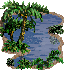 Оазис | 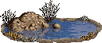 Водоем | 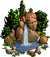 Фонтан Молодости | 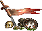 Флаг Единства |
| Бонус | 800 | 400 | 400 | 400 |
Объекты бонус которых дествует более 1 дня
| Объект | Описание | Бонус |
| 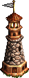 Маяк (внешний) | бонус начисляется за каждый Маяк под контролем игрока | 500 |
| Маяк (в замке) | в отличие от Маяков на карте, маяк в замке дает бонус ВСЕМ (и Вам и противнику) | 500 |
| 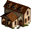 Конюшня | Конюшни на карте и в замке "Замок" дают одинаковый бонус который действует до окончания недели. | 400 |
Почти что вся карта после начала игры скрыта под "туманом войны", но есть некоторое факторы, которые позволяют разведать закрытые туманом области:
На движение по горизонтали и вертикали тратится 100 MP, по диагонали - 141 MP (100*21/2). Посещение объектов также считается движением. Исключение - "повторное посещение" [Space] - в этом случае ходы не тратятся. В это понятие входят Замки, шахты, дружественные герои, телепорты/водовороты, сокровищницы, квестовые домики и т.д. Если герой посещает Пруд Лебедей, он теряет весь остаток хода (если бонус Пруда еще действует, повторное посещение не вызывает потери хода).
Если герой садится в лодку. или высаживается на берег, он теряет остаток хода. Исключение - если у героя есть артефакт Шляпа Адмирала - в этом случае запас хода по воде/земле пересчитывается в запас хода по земле/воде. Стоимость посадки - 100 MP при движении прямо, 141 MP при движении по диагонали.
На раскопки Грааля герой теряет весь ход. Копать Грааль в день прибытия на место будущих раскопок не позволено. Подробнее о копании грааля.
На движение по определенным территориям тратится в несколько раз больше/меньше MP, чем при движении по траве. При движении по таким территориям каждые 100 (141) MP, затрачиваемые на шаг, умножаются на соответствующий коэффициент, который зависит от навыка "Поиск Пути" у вашего героя.
Зависимость штрафа/бонуса, который получает герой при передвижении по местности от вида почвы и уровня развития вторичного навыка "Поиск Пути" можно увидеть в следующей таблице (указано для случая, когда в армии героя имеются войска, ландшафт для которых не является родственным). Для определения длины хода необходимо стартовую величину в MP разделить на данные указанные в таблице. Очевидно, что имеются типы почвы, которая не несет никаких штрафов при передвижении (если 100%), также некоторые снижают длину хода (если больше 100%), дороги увеличивают длину хода (если меньше 100%).
| Тип территории | Норма | Уровень навыка "Поиск пути" Базовый | Уровень навыка "Поиск пути" Продвинутый | Уровень навыка "Поиск пути" Эксперт |
| Мощёная дорога | 50% | 50% | 50% | 50% |
| 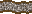 Гравиевая дорога | 65% | 65% | 65% | 65% |
| Грязевая дорога | 75% | 75% | 75% | 75% |
| 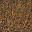 Грязь | 100% | 100% | 100% | 100% |
| Трава | 100% | 100% | 100% | 100% |
| Лава | 100% | 100% | 100% | 100% |
| Подземелье | 100% | 100% | 100% | 100% |
| Камни | 125% | 100% | 100% | 100% |
| Песок | 150% | 125% | 100% | 100% |
| Снег | 150% | 125% | 100% | 100% |
| Болото | 175% | 150% | 125% | 100% |
Штрафы местности не действуют, если:
| Раса | Класс героя | "Родная земля" |
| Замок | Рыцарь, Священник | Трава |
| Оплот | Рейнджер, Друид | Трава |
| Башня | Алхимик, Маг | Снег |
| Инферно | Демон, Еретик | Лава |
| Некрополис | Рыцарь смерти, Некромант | Грязь |
| Темница | Лорд, Чернокнижник | Подземелье |
| Цитадель | Варвар, Боевой маг | Камни |
| Крепость | Хозяин зверей, Ведьма | Болото |
| Сопряжение | Путешественник, Элементалист | Трава |
На скорость движения героя по карте влияет вид местности - скорость героя увеличивается при наличии навыка "Поиск Пути", по которой движется герой и наличие дорог, которые автоматически снижают затраты на прохождение, чем самым увеличивают запас хода - но не МР(!)
Грязевая дорога – увеличивает скорость на 25% (на самом деле - снижает расход MP на 25%); гравийная дорога - на 35%; мощеная дорога - на 50%.
Каменистая почва – понижает скорость героя на 25%, если у него нет навыка "Поиск Пути" (на самом деле - увеличивает расход MP на 25%).
Пески – при отсутствии навыка "Поиск Пути" понижает скорость на 50%, а на базовом уровне навыка – на 25%.
Болото – при отсутствии навыка "Поиск Пути" понижает скорость на 75%, на базовом уровне навыка – на 50%, а при продвинутом - на 25%.
В бою на родственном для юнитов ландшафте герои видят все эффекты вражеских заклинаний, которые невидимы; скорость юнитов в бою увеличивается на +1, причем, это относится именно юнитам в армии героя, но не имеет значение класс героя, который управляет юнитами. Т.е. Хозяин зверей не увеличит скорость своим юнитам на болоте, если юниты будут не из болотного замка. Примечательным также является тот факт, что при осаде города родной землей является не местность на которой город расположен, а тип самого города. Т.е. при осаде Оплота, стоящего на болоте, бонус будут иметь юниты Рампарта, а не болотники.
Если у героя недостаточно МР для шага по диагонали (141), но достаточно для шага по горизонтали или вертикали (т.е.141?MP?100), он все же может шагнуть по диагонали, но лишь в случае отсутствия штрафов на передвижение (дороги, состав армии и заклинание "Полет" в расчет не принимаются - т.е. штраф местности для последнего шага действует всегда).
Например:
Заклинание позволяет игнорировать штрафы местности (бонусы при этом продолжают действовать), однако заклинание имеет собственную систему штрафов.
В зависимости от уровня развития вторичного навыка "Магия Воздуха" при использовании заклинания Полет на каждый шаг тратится больше МР. В таблице приведены коэффициенты:
| Навык | Штраф |
| Нет | 140% |
| Базовый | 140% |
| Продвинутый | 120% |
| Эксперт | 100% |
Артефакт "Крылья Ангела" дает герою постоянно наложенное экспертное заклинание "Полет"!
Является "урезанной версией" заклинания "Полет". - Позволяет преодолевать только водные преграды. В зависимости от уровня развития вторичного навыка "Магия Воды" при использовании заклинания "Ходьба по воде" на каждый шаг по воде тратится больше МР. В таблице приведены коэффициенты:
| Навык | Штраф |
| Нет | 140% |
| Базовый | 140% |
| Продвинутый | 120% |
| Эксперт | 100% |
На перемещение героя (в замок или указанную точку) тратится:
||
| Нет | 300 |
| Базовый | 300 |
| Продвинутый | 300 |
| Эксперт | 200 |
У замка "Инферно" есть одноименная постройка - "Городские врата". С ее помощью герои могут перемещаться между замками "Инферно", в которых есть эта постройка, не тратя при этом драгоценные MP.
Чтобы подобрать сундук, артефакт, ресурс и т.д., достаточно сделать левый клик на этом объекте, и компьютер определяет наиболее выгодный маршрут. Однако этот маршрут строится без учета направления дальнейшего движения героя, поэтому его можно немного улучшить.
Герой должен взять сундук. Компьютер выдал кратчайший маршрут. Если герой заберет сундук, он потратит на это 141 МР, но при этом останется на месте.
Однако, после того, как герой возьмет первый сундук, он должен пойти за вторым. Три шага по горизонтали. В итоге для того, чтобы взять оба сундука, герою понадобится: 141+100+100+100=441 МР
Если не использовать маршрут, предложенный компьютером, можно выгоднее распорядиться запасом хода:
Направляем героя на клетку вперед. 1 шаг по горизонтали.
Герой забирает первый сундук... 1 шаг по вертикали
И бежит ко второму. 2 шага по горизонтали. В этом случае на сбор сундуков у героя уйдет: 100+100+100+100=400 МР, что на 41 МР меньше, чем в первом случае.
На карте иногда встречаются скопления различных ресурсов. Если самому прокладывать путь, можно избежать неоправданных потерь МР.
Допустим, герою нужно собрать три сундука. В этом случае вариант компьютера будет следующим:
Герой берет первый сундук. (141 МР)
Герой берет второй сундук (100+141=241 МР)
Тем же способом берет третий сундук (100+141=241 МР). В итоге, на каждый сундук, кроме первого, герой потратит 241 МР.
Но есть способ гораздо лучше. Герой шагает на клетку вперед (100 МР).
Забирает первый сундук (100 МР).
Шагает еще на клетку вперед (100 МР), потом забирает еще один сундук и т.д. На каждый сундук у героя уходит 200 МР, что на 41 МР меньше, чем в первом случае. В итоге, потери мувпоинтов для предложенного варианта из трех объектов составят 123 MP, что лишит Вашего героя целого хода в конце пути. А как важен бывает иногда именно последний ход!
Цель героя – захват города с последующим посещением. Тут уже нужно обойтись без "самодеятельности" и доверить компьютеру составление маршрута. Потому как, если герой атакует город с этой клетки, он потратит 141 МР и после битвы останется на месте. Потом ему придется потратить еще столько же, чтобы войти в город. ИТОГО: 282 МР. Если же герой шагнет вправо, атакует город и войдет в него, он потратит 300 МР, что несколько больше и может быть крайне критичным, особенно на последнем ходе.
Бывают случаи, когда обход кучи ресурсов может сэкономить несколько МР. Подобные маневры бывают полезны при игре на скорость, когда главный герой ни в коем случае не должен отвлекаться на сбор ресурсов.
Если герой возьмет сундук и проскачет два шага вправо, он потратит 300 МР. Если герой обойдет сундук, он потратит 282 МР.
В этом примере обход сэкономит герою еще больше: Если герой возьмет сундук и проскачет две клетки по диагонали, он потратит 423 МР. На обход сундука герой потратит лишь 341 МР!
Не следует забывать о дорогах. Прямой путь не всегда самый быстрый.
Рассмотрим пример. Необходимо взять оба сундука и пройти дальше по дороге. Если довериться компьютеру, маршрут получится следующий:
Герой берет первый сундук (100 МР) ... и бежит к следующему, минуя дорогу (300 МР).
После чего переходит на дорогу 141 MP. Итого в сумме: 541 MP
Если самому прокладывать маршрут. Герой сразу шагает на дорогу (141 MP).
Герой берет первый сундук (100 МР).
Два шага по дороге (200*0.75=150 МР) и герой забирает второй сундук (100 МР). Итого в сумме: 491 MP.
Поскольку расчет запаса хода происходит в начале дня и в течение дня уже не пересчитывается, можно выиграть пару шагов, если в конце дня оставить в армии только самых быстрых существ. (Точнее сказать - достаточно оставить существ со скоростью передвижения хотя бы 11, так как более высокая скорость уже не дает дополнительного преимущества. Причем важно помнить, что учитывается только естественная скорость существ без учета бонусов артефактов разгона в бою и без учета эффекта скорости на родной местности). Для этого можно оставить медленные войска в гарнизоне, городе, на охране шахты, или передать их другому герою, а в начале следующего дня вернуть их. Артефакты Сапоги-Скороходы и Перчатки Всадника имеет смысл одевать только на ночь, чтобы в начале следующего дня получить бонус к запасу хода. Если в начале дня их снять, запас хода не уменьшается.
Примечание: важно понимать, что эффект штрафа пересеченной местности влияет на запас хода и пересчитывает его в течение дня. Т.е. если на болоте никто из ваших юнитов не имеет штрафа местности, но в течение хода к Вам присоединится нейтральная армия не болотных существ, остаток Вашего хода уменьшится сразу же, потому как включается действие штрафа местности. Однако, можно проявить хитрость - и оставить этих существ охранять ближайшую шахту, а забрать на обратном пути. Тут уж Вам решать, что важнее - скорость или мощь армии. Напомню, что в пустыне можно полностью избежать штрафа местности, если взять в армию хотя бы одного Кочевника. Также можно избежать штрафа местности, если у Вас в армии помимо существ, для которых данная местность является родной, имеются нейтралы (Снайпер, Мумия, Сказочный Дракон, Чародей и пр.). Они, естественно, несут штраф, так как являются чужеродными юнитами для данной местности. Однако, если поставить нейтрала левее всех остальных юнитов в окне героя (на поле боя нейтралы будут выше всех), то в этом случае можно избежать штрафа. Это недокументированная фишка в игре, но она действует во всех случаях, причем, компьютер также ее может применить.
Армия героя должна включать как минимум один отряд, максимум - семь. Герои могут обмениваться войсками и артефактами в экране встречи героев - для этого достаточно подойти одним героем к другому. Для роспуска отряда достаточно на его экране нажать кнопку "Уволить". Герои могут нанимать армию в городах и замках, а также во внешних жилищах монстров на местности. Кроме того, к герою могут присоединиться нейтральные отряды, находящиеся на карте. Часть нейтралов ("лояльные") присоединяется даром, часть - только за деньги. На вероятность присоединения влияет вторичный навык дипломатия "Дипломатия", подробнее о принципах работы дипломатии описано в разделе "Дипломатия".
Чтобы взять под контроль, не принадлежащее игроку жилище монстров, ему достаточно либо просто посетить жилище одним из своих героев (для жилищ существ 1-4-го уровней), либо перебить охрану из существ этого жилища (для жилищ существ 5-7-го уровней), состоящую из тройного базового прироста этих существ. В начале каждой недели в каждом жилище появляется базовый прирост существ. Все существа в жилищах, кроме существ первого уровня, присоединяются к герою по обычной цене. Существа первого уровня - бесплатно. В общем случае, базовый прирост для каждого из уровней равен:
| Уровень | Базовый прирост |
| 5 | 3 |
| 6 | 2 |
| 7 | 1 |
| Элементали Земли | 4 |
| Огненные птицы | 2 |
Базовый прирост произвольного типа существ доступен для вербовки каждую неделю. В лагере не появляются: Снайперы, Чародей, Лазурные Драконы, Ржавые Драконы, Кристальные Драконы и Сказочные Драконы.
Примечание: поскольку тип существ меняется каждый понедельник новой недели, в оффлайн-турнирах существует следующая практика: на седьмом дне игрок сохраняется, заканчивает ход, смотрит, какие монстры пришли в Лагерь Беженцев, если не нравится - загружает сэйв. Т.о. можно получать Архангелов хоть каждую неделю - необходимо лишь везение и терпение!
Сам, собственно, дополнительных существ не дает, но позволяет их модифицировать, а, следовательно, создает новые взамен старых, потому включен в эту категорию объектов на карте. Под стоимостью апгрейда понимается та часть суммы, которая будет уплачена в случае апргейда в замке.
| Уровень войск | Стоимость апгрейда |
| 1 | бесплатно |
| 2 | 25% |
| 3 | 50% |
| 4 | 75% |
| 5-7 | 100% |
Аналогично "Форту на холме", в Конюшне можно провести апгрейд войск. Правда - это получится сделать всего с одним единственным юнитом, зато абсолютно бесплатно! Кавалеристы при посещении Конюшни автоматически грейдятся до Чемпионов.
| Вероятность | Охрана | Коэффициент сложности битвы по отношению к самому легкому | Награда | Вероятность появления апгрейдженного юнита |
| 30% | 50 грифонов | 1,00 | 1 Ангел | 50% |
| 30% | 100 грифонов | 2,00 | 2 Ангела | 50% |
| 30% | 150 грифонов | 3,00 | 3 Ангела | 50% |
| 10% | 200 грифонов | 4,00 | 4 Ангела | 50% |
| Вероятность | Охрана | Коэффициент сложности битвы по отношению к самому легкому | Награда |
| 30% | 30 Стрекоз | 1,00 | 4 Виверна |
| 30% | 45 Стрекоз | 1,50 | 6 Виверна |
| 30% | 60 Стрекоз | 2,00 | 8 Виверна |
| 10% | 90 Стрекоз | 3,00 | 12 Виверна |
Охрана - 12 Элементалей Земли, приобретение всех видов элементалей.
В городе увеличивает только прирост Элементалей Воздуха/Шторма.
Охрана - 9 Золотых големов и 6 Алмазных големов, приобретение всех видов големов.
В городе увеличивает только прирост Каменных/Железный голем.
Данное строение не бывает на карте вне города, тем не менее я решил отнести его в категорию строений, приносящих войска по той причине, что вы можете раз в неделю вызвать через портал войска одного из принадлежащих Вам внешних двеллингов (определяется случайным образом). Однако, если у вас всего один внешний двеллинг, то в портале появятся существа именно из него! При этом, даже будучи выкупленными через портал, юниты остаются доступными и при посещении двеллинга. Другими словами, портал создает для Вас из ниоткуда войско, равное недельному приросту двеллинга.
Количество юнитов в нейтральной армии, находящейся на карте приключений, определяется составителем карты. По умолчанию - на старте их не больше десятка. Однако составитель вправе указать стартовое количество по своему усмотрению. Также он указывает будет ли осуществляться еженедельный прирост войск в армии нейтралов (прирост, если он разрешен, составляет +10% в неделю к текущему количеству).
Распределение нейтральных юнитов по стекам в момент начала битвы подчиняется своим строгим законам и зависит от соотношения k силы армии Вашего героя (A) и силы армии нейтралов (H).
| k=A/N | Количество стеков противника |
| < 0,50 | 6 |
| 0,50-0,67 | 5 |
| 0,67-1 | 4 |
| 1 - 1,5 | 3 |
| 1,5 - 2 | 2 |
| > 2 | 1 |
Коррективы в количество стеков случайным образом вносят координаты [X;Y] нейтралов на карте. В зависимости от координат, количество неусовершенствованных стеков видоизменяется одним из нескольких возможных вариантов: +1 апгрейженный стек, +1 или +2 неапгрейженных стека, либо количество стеков остается неизменным.
Если Вы напали на НЕусовершенствованных монстров, а в их рядах появились усовершенствованные, после побега Вашего героя численность юнитов N этой армии уменьшится согласно приведенной ниже формулы (т.е. при нападении на этот нейтральный отряд юнитов на текущей неделе вы обнаружите, что количество юнитов в нем уменьшено. В начале следующей недели прирост составит +10% к текущему количеству, если прирост не запрещен создателем карты).
N=Базове_Количество-Количество_Убитых-Количество_Улучшенных
где:
Указанная выше формула говорит, что все оставшиеся в живых апгрейженные юниты после боя покидают армию нейтралов, значит после уничтожения неапгрейженных юнитов Ваш герой может смело сбегать с поля боя не завершая битву. После сбегания армия нейтралов все равно исчезнет. Это верно и для случая, если Ваш герой будет уничтожен армией нейтралов - ни один апгрейженный юнит в ней не сохранится.
Например, при нападении на 100 неапгрейженных грифонов мы обнаруживаем, что один из трех стеков состоит из 33 Королевских Грифонов. Смело их слепим, расправляемся с остальными 67 грифонами и убегаем. Все - дело сделано! Другой вопрос, что также теряем всю свою оставшуюся армию, но это уже - на Ваше усмотрение. Ведь не факт, что ее остатки смогли бы уложить последний стек Королевских Грифонов. Стоит отметить, этот принцип не действует при битвах с охраной объектов на карте приключений.
Примечание: при проведении off-line турниров на игровых ресурсах данный прием уничтожения нейтралов как правило является запрещенным.
Обрисуем ситуацию: перед нашим героем стоят сразу несколько отрядов нейтралов (см. рис.). Следующим шагом герой наступает на клетку, в которой теоретически на него может напасть любой из стоящих рядом отрядов. Предположим, среди них есть те, которые готовы присоединиться, а есть те, которые нанесут герою недопустимые потери. Стоит ли ходить именно на эту клетку или нет. Какой из отрядов первым нападёт / убежит / присоединится? Есть ли какое-нибудь правило, которое поможет разобраться в этом вопросе?
Оказывается, есть! См. рис. Раньше всех будет взаимодействовать с нашим героем отряд, располагающийся на карте а) левее других; б) если несколько отрядов имеют одинаковую координату по вертикали, то отряд, расположенный выше других.
Цифрами обозначен "приоритет взаимодействия" нейтралов.
Определение величины войска в армии нейтралов (по версиям)
| Количество войск | Возрождение Эрафии | Меч Армагеддона | Дыхание смерти | Хроники Героев | Полное собрание | |
| 1-4 | несколько | несколько | пара | немного | мало | |
| 5-9 | немного | кучка | мало | несколько | группа | |
| 10-19 | отряд | группа | группа | около | десятка | стая |
| 20-49 | толпа | много | толпа | много | много | |
| 50-99 | орда | орда | орда | толпа | орда | |
| 100-249 | множество | множество | сотня | орда | толпа | |
| 250-499 | сонмище | толпа | туча | туча | свора | |
| 500-999 | полчище | несметное | тьма | до черта | тысячи | |
| 1000+ | легион | легион | легион | легион | легион |
Думаю, не будет новостью мое заявление, что нет вторичного навыка более полезного и в то же время непонятного, каким является Дипломатия. Тем не менее, этот навык имеет достаточно четкие и понятные внутренние правила.
Все юниты с самого начала делятся на пять степеней лояльности, что определяет их возможное дальнейшее присоединение к Вашей армии.
| Степень лояльности | Поведение |
| 1 Податливое | Всегда присоединится |
| 2 Дружелюбное | Вероятно присоединится |
| 3 Агрессивное | Принятое по умолчанию среднее значение |
| 4 Враждебное | Вероятно НЕ присоединится |
| 5 Кровожадное | Никогда не присоединится |
В момент первого запуска игры, случайным образом определяется вероятность присоединения юнита. То есть монстр может быть таким, что не присоединится ни в каком случае. И степень навыка «Дипломатия» или сила войска не помогут. Хотя в редакторе карт он может быть определен как «Дружелюбный (вероятно присоединится)». Потому дальше рассматривать будем лишь только ту ситуацию, когда монстр случайным или намеренным образом относится ко 2, 3 или 4 степени лояльности, а также имеется вероятность присоединения монстра.
| Степень лояльности | Стартовая вероятность присоединения |
| 1 Податливое | 100% - не меняется |
| 2 Дружелюбное | +40% - можно изменить |
| 3 Агрессивное | +10% - можно изменить |
| 4 Враждебное | -20% - можно изменить |
| 5 Кровожадное | 0 % - не меняется |
| Условие | Изменение вероятности |
| Навык дипломатии | +10% за каждый уровень (max +30%) |
| Наличие в Вашей армии существ из того же замка | +5% (точно неизвестно) |
| Наличие в Вашей армии таких же существ (не имеет значение грейженных или нет) | +10% (единоразово)2 |
| Большинство в Вашей армии таких же существ | +20% (единоразово)3 |
Плюс к этому существует ряд наблюдений, позволяющих повысить вероятность (IMHO):
Примечательным фактом можно назвать то, что все три "дипломатических" артефакта никоим образом не имеют отношения к дипломатии - той дипломатии, о которой идет речь. Лента Посла, Медаль Дипломата и Кольцо Дипломата никак не влияют ни на агрессию монстров, ни на стоимость их присоединения. Они лишь снижают стоимость Вашего откупа (каждый арт - на 10%) если Вам придет в голову сдаваться и сохранить свои войска.
Вторичный навык "Дипломатия" также помогает снизить стоимость откупа в случае, если Ваш герой пожелает сохранить свои войска. Величина снижения откупа равна 20% за каждый уровень развития вторичного навыка. Ниже представлена таблица, в которой указана стоимость откупа при различных вариантах развития вторичного навыка и количества дипломатических артефактов, которые имеет Ваш герой, где за 100% принята первоначальная стоимость откупа Вашей армии. По умолчанию, максимальная стоимость откупа равна 50% стоимости всех юнитов в армии героя без учета стоимости ресурсов, если таковые использовались для покупки юнитов
Зависимость цены капитуляции от различных параметров
| Дипломатические артефакты | Навык "Дипломатия" Отсутствует |
| 1 арт | 90% - 1 gold | 70% - 1 gold | 50% | 30% - 1 gold |
| 2 арта | 80% - 1 gold | 60% - 1 gold | 40% - 1 gold | 20% - 1 gold |
| 3 арта | 70% - 1 gold | 50% | 30% - 1 gold | 10% |
Мораль отряда – вероятность повторения действия отряда в бою. При положительном параметре морали и некотором везении отряд может действовать два раза за один раунд, а при плохой наоборот - бездействовать. (Примечание: Мораль часто называют Боевым Духом войск). Боевой дух армии модифицируется разными способами:
| Уровень Морали | Вероятность ее применения, % |
| +3 | 12,5 |
| +2 | 8,3 |
| +1 | 4,2 |
| 0 | 0 |
| -1 | 4,2 |
| -2 | 8,3 |
| -3 | 12,5 |
Удача повышает шансы отряда нанести двойной урон. Имеется в виду, что к урону нанесенному юнитом, будет добавлен только базовый урон - но никакие модификации не удваиваются. Например, если урон, нанесенный Архангелом - 50 HP, при эксперте Атаки вашего героя, каждый Арх в вашей армии нанесет 50*1.3 = 65 HP, при выпадении Удачи урон составит 50*1.3+50=115 HP. Модифицируется они аналогично морали - артефактами, навыком "Удача", посещением объектов повышающих удачу, наличием в армии существ влияющих на удачу. Шанс отряда нанести двойной урон рассчитывается из очков удачи по той же схеме, что и вероятность повторного хода из боевого духа.
Примечание: Удача, в отличие от Морали никак не проявляет своего отрицательного значения - согласно хэлпу урон юнита должен половиниться в случае выпадения отрицательной Удачи (Неудачи), однако на практике такие случаи не наблюдаются.
Объекты повышающие мораль и удачу
| Домик Фей | +1 к удаче |
| Фонтан удачи | от -1 до +3 к удаче. Цифра выбирается случайно каждую неделю. |
| Лебединый Пруд | +2 к удаче, герой теряет остаток хода |
| Храм | +1 к морали; на седьмой день +2 к морали |
| Идол Удачи | +1 к удаче по нечетным дням, кроме 7-го;
+1 к морали по четным дням; +1 к морали и удаче на седьмой день |
| Буй | +1 к морали |
| Русалки | +1 к удаче |
| Фонтан Молодости | +1 к морали |
| Флаг Единства | +1 к морали и удаче |
| Водоем | +1 к морали |
| Оазис | +1 к морали |
| Проклятая земля | В бою проклятая земля нейтрализует действие (как положительное, так и отрицательное!) Удачи, Морали и Родной земли. |
| Клеверное поле | В бою дает +2 к удаче существам "нейтральных" замков (Сопряжение, Цитадель, Крепость) |
| Святая Земля | В бою дает +1 к морали существам "добрых" замков (Замок, Оплот, Башня); -1 к морали существам "злых" замков (Инферно, Темница) Примечание: Хотя Некрополис и относится к "злым" замкам, мораль его существ не меняется, т.к. все существа этого замка имеют свойство "Нежить". |
| Дьявольский Туман | В бою дает -1 к морали существам "добрых" замков (Замок, Оплот, Башня); +1 к морали существам "злых" замков (Инферно, Темница). |
Объекты понижающие мораль или удачу
| Объект | Результат |
| Могила воина | Обыск могилы дает -3 к морали (независимо от того, разграблена она или нет). |
| Склеп | Посещение ранее разграбленного склепа дает -1 к морали. |
| Пирамида | Посещение ранее разграбленной пирамиды дает -2 к удаче. |
| Покинутый корабль | Посещение ранее разграбленного Покинутого Корабля дает -1 к морали. |
| Место кораблекрушения | Посещение ранее разграбленного Места Кораблекрушения дает -1 к морали. |
На баланс морали и удачи у каждого героя помимо вышеуказанных объектов влияют артефакты, модифицирующие эти состояния, а также вторичные навыки Лидерство и Удача.
После щелчка мышкой по фигурке всадника вы сможете применять магию а также бежать или сдаться врагу, если дела плохи. В обоих случаях герой сбегает с поля боя и может быть нанят вновь со всеми его артефактами (Очки магии не восстанавливаются). Только в случае сбегания теряются все его войска, и при найме у него будет один юнит 1-го уровня, сответствующий классу героя, а при сдаче он сохраняет армию, уплатив противнику некоторую часть ее денежной стоимости. Сбежать можно только вне города, сдаться - только вражескому герою. В начале каждой недели герои, имеющиеся для найма в замках, меняются. Поэтому не тяните с выкупом нужного героя. Кроме того, если на одном ходу у вас сбежит или сдаcтcя более двух героев, то они также будут для вас потеряны.
Количество убитых при атаке вражеских единиц зависит от наносимых атакующим отрядом повреждений, при атаке эта величина пишется внизу экрана. Узнать число убитых можно, поделив Повреждение на количество очков здоровья атакуемых. При этом целая часть полученного числа и будет число убитых. Остаток от деления накапливается, т. е. отряд становится "раненым". Следует отметить, что Тролли и Вампир-лорды могут "восстанавливать" повреждения - раненые Тролли в начале хода, а Вампир-лорды - когда убивают врага.
Существует четыре основных параметра, определяющих величину суммарного урона D(sum), который сможет нанести ваш юнит противнику:
Рассмотрим эти параметры подробнее.
Каждый юнит имеет определенный интервал значений урона [Dmin;Dmax], в пределах которого случайным образом будет взят базовый урон для расчета величины суммарного урона. Значение выбирается в каждом раунде боя случайным образом.
На базовый урон могут оказать влияние два заклинания:
В случае равенства параметров атаки нападающего и защиты жертвы модификатор базового урона равен нулю. В случае, когда атака (Att) нападающего юнита (с учетом всех артефактов) больше защиты (Def) жертвы, за каждую единицу разницы модификатор увеличивается на 5% от величины базового урона (максимальное превышение, разрешенное в игре составляет 300%, при дальнейшем росте дельты Атака-Защита эффект не усиливается). В случае, когда атака нападающего юнита (с учетом всех артефактов) меньше защиты жертвы, за каждую единицу разницы модификатор увеличивается (по модулю) на 2,5% от величины базового урона (максимальное снижение - на 70%), причем в этом случае модификатор имеет отрицательный знак. Т.е. в итоге он уменьшает суммарный урон юнита.
Если атака больше защиты.
МD(bas)=(Att-Def)*0,05*D(bas)
Максимум на 300%, т.е. максимальный урон будет, когда атака больше защиты на 60.
Если атака меньше защиты.
MD(bas)=(Att-Def)*0,025*D(bas)
Максимум на 70%, т.е. минимальный урон будет, когда защита превышает атаку на 28 или более пунктов.
Примечание: Отсюда легко показать, что модификатор базового урона может принимать значения в диапазоне [-0,7; 3,0], где за единицу принят базовый урон D(bas). Или, другими словами, базовый урон, скорректированный модификатором в итоге составит величину [0,3; 4,0].
На модификатор базового урона могут оказать влияние следующие заклинания:
Эффект применения этих заклинаний будет зависеть от значимости модификатора базового урона для каждого конкретного юнита. Например, если атака нападающего больше защиты жертвы, то заклинание жажда крови увеличит суммарный урон на 6*5%=30% (от величины базового урона). Действие этого заклинания для такого юнита в точности соответствует экспертному вторичному навыку Нападение. Однако, если атака нападающего существенно меньше защиты жертвы, то эффект от заклинания будет в два раза слабее и составит только 6*2,5%=15% от величины базового урона.
На основании вышесказанного легко проследить преимущества и недостатки того или иного заклинания в каждом конкретном случае. Например, для таких юнитов как Копейщик, Фея, Гарпия или Цербер, у которых большой разброс базового урона - намного эффективнее будет смотреться экспертный Блесс, (который увеличит базовый урон минимум в два раза и это отразится на не только на одном, а на всех составляющих суммы!), чем Жажда Крови, которая хоть и дает кажущуюся силу +6 в атаке, тем не менее принесет в итоге только 30% от базового урона всего для одного из четырех слагаемых.
Третья составляющая суммарного урона - модификатор нападения M(of) зависит от степени развития вторичного навыка Нападение (если он присутствует среди навыков героя) и составляет величину 10-30% от базового урона D(bas). В расчете этого параметра модификатор базового урона не применяется, т.е. никакие из указанных выше заклинаний, никакие артефакты не изменят эту составляющую суммарного урона. Она строго фиксирована и определяется только непосредственно рандомным базовым уроном в каждом раунде боя.
Особое внимание стоит уделить героям, которые имеют специализацию Нападение (Крэг Хэк и Гундула). Эти герои имеют бонус, который увеличивает модификатор нападения (и только его) на 5% за каждый достигнутый уровень опыта.
M(of)=0,30*(1+0,05*Level)*D(bas)
Указано для экспертного уровня навыка Нападения, выражен в хитпоинтах (HP).
Следует обратить внимание, что эти проценты имеют относительный, а не абсолютный характер, т.е. спец по Нападению десятого уровня, имеющий экспертный навык Нападение (бонус +30% базового урона) в итоге будет иметь M(of) = 30*(1+0,05*10 Level) = 45%, а не 30+5*10 = 80%, как иногда ошибочно считают.
В силу того, что спец по нападению изначально имеет базовый навык Нападение, его бонус на старте составляет M(of) = 10*(1+0,05*1 Level)=10,5% от базового урона. Максимально достижимый уровень в игре – 108 Level, что позволит спецу в этом случае иметь бонус M(of) = 30*(1+0,05*108 Level) = 192% от базового урона.
Модификатор нападения не участвует в расчете урона, наносимого стрелками на расстоянии.
Наиболее простой и понятный модификатор из всех четырех. Потому что в случае срабатывания удачи во время нанесения удара, юнит наносит дополнительно урон равный базовому урону D(bas), определенному для этого раунда боя. Понятно, что если на юнит, к примеру, наложено заклинание "блесс", то урон от удачи будет равен (Dmax+1).
Единственной известной мне особенностью этого модификатора является тот факт, что при расчете урона от юнита, который может атаковать сразу несколько стеков врага (Гидры, Психические Элементали) удача применяется только к тому юниту, на кого собственно совершается нападение. Остальные получают стандартный урон без учета модификатора удачи.
M(luck)=D(bas)
Отдельно необходимо упомянуть три оставшихся заклинания, которые модифицируют суммарный урон, наносимый юниту.
Действие второго из двух предложенных заклинаний, по сути, аналогично первому, однако имеется один существенный баг, который необходимо учитывать при использовании Воздушного Щита – если на юнит наложено это заклинание, то он вместо половинного урона получает двойной урон от стрелковых башен при осаде города. Это может существенно осложнить процедуру захвата, если не знать этого нюанса.
Вторичный навык Доспехи, имеющийся у героя, который подвергается атаке, оказывает влияние на суммарный урон, нанесенный его юнитам и снижает его на 5-15% в зависимости от степени прокачки этого навыка. Для вычисления модификатора защиты M(def) у специалистов вторичного навыка Доспехи (Мефала, Нила, Тазар) применяем тот же механизм расчета, что и для спецов в Нападении - за каждый достигнутый уровень опыта бонус вторичного навыка увеличивается на 5% (относительных).
Также, думаю, не должен оспариваться тот факт, что эксперт навыка Доспехи в большинстве случаев отразит большее число хитпоинтов атаки, чем тому же атакующему принесет экспертный вторичный навык Нападение, даже с учетом того, что в относительном выражении (15% против 30% у Нападения) он смотрится менее внушительно. Применяется в расчете в последнюю очередь и дополняет действие заклинания Щит или Воздушный Щит.
M(def)=0,15*(1+0,05*Level)
Указано для экспертного уровня навыка Доспехи, выражен в %.
Итого, суммарный урон будет считаться как сумма указанных параметров, скорректированная модификатором защиты (действие заклинаний в формуле не отражено, однако подразумевается):
D(sum)=[D(bas)+MD(bas)+M(of)+M(luck)]*[1-M(def)]
Как известно, город может иметь центральную "стрелковую башню" (возникает при постройке в городе цитадели) или центральную и две боковые (в случае постройки замка). Урон, наносимый центральной башней, в два раза больше, чем от одной из боковых. Величина урона зависит только от количества "структур" (зданий), имеющихся в данный момент в городе (уровень защиты атакующего отряда и его расположение на поле не влияют на величину урона, что имеет место при дистанционных атаках стрелковых отрядов защитников). Однако, не все, что можно построить в городе, подпадает под определение "структуры":
Повреждение(HP)=D+d*N,
где:
Примечание: наблюдения и анализ боев в игре показывают, что в случае, когда на атакующий юнит наложено заклинание "Воздушный щит", этот юнит получает удвоенный урон при обстреле стрелковыми башнями, что можно отнести к разряду багов.
Города каждого типа строят свои, особые рвы. Когда какой-нибудь отряд попадает в ров, его движение в этом раунде заканчивается. Для Клинка Армагеддона и Дыхания Смерти, кроме того - пока отряд остается во рву, ему в каждом раунде наносится урон, величина которого зависит от вида рва. Рвы преодолеваются отрядами за один раунд, кроме рва Крепости, который имеет большую ширину и преодолевается за два раунда.
Урон наносимый рвом в каждом из замков
| Замок | Количество "структур"4 | Особенность фортификационного рва |
| Замок | 17 | Ров наносит 70 HP повреждений любому отряду, попавшему в него |
| Оплот | 16 | Ежевичная Ограда наносит 70 HP повреждений любому отряду, попавшему в нее |
| Башня | 18 | Мины заменяющие фортификационный ров для в этом городе имеют относительно сложную математику расчета поражения войск наступающей армии. Подробнее. |
| Некрополис | 8 | Захоронение наносит 70 HP повреждений любому отряду, попавшему в него |
| Темница | 18 | Кипящее Масло наносит 90 HP повреждений любому отряду, попавшему в него |
| Инферно | 17 | Лава наносит 90 HP повреждений любому отряду, попавшему в нее |
| Крепость | 18 | Кипящая Смола наносит 90 HP повреждений любому отряду, попавшему в ров. Преодолевается отрядами за два раунда |
| Цитадель | 18 | Острый Выступ наносит 70 HP повреждений любому отряду, попавшему в него |
| Сопряжение | 17 | Ров наносит 70 HP повреждений любому отряду, попавшему в него |
Прочность узлов городских стен и фортификационных сооружений (HP)
| Объект Прочность (HP) | |
| Подъемный мост | 0 |
| Канат подъемного моста | 0 |
| Ров | 0 |
| Край рва | 0 |
| Задняя стена | 0 |
| Верхняя башня | 2 |
| Верхняя стена | 2 |
| Верхняя опора | 0 |
| Средняя верхняя стена | 2 |
| Ворота | 2 |
| Средняя нижняя стена | 2 |
| Нижняя опора | 0 |
| Нижняя стена | 2 |
| Нижняя башня | 2 |
| Центральная башня | 2 |
| Охрана центральной башни | 0 |
| Охрана нижней башни | 0 |
| Охрана верхней башни | 0 |
| Баллистика | Выстрелов | Шанс попадания Замок | Шанс попадания Башни | Шанс попадания Врата | Шанс попадания Стена | Вероятность нанести урон Нет | Вероятность нанести урон 1 HP | Вероятность нанести урон 2 HP |
| Нет | 1 | 5% | 10% | 25% | 50% | 10% | 60% | 30% |
| Базовый | 1 | 7% | 15% | 30% | 60% | 0% | 50% | 50% |
| Продвинутый | 2 | 7% | 15% | 30% | 60% | 0% | 50% | 50% |
| Эксперт | 2 | 10% | 20% | 40% | 75% | 0% | 0% | 100% |
После завершения боя, путем уничтожения противника или захвата объекта, герой получает опыт, количество получаемого опыта ровняется сумме НР убитых вражеских существ во время сражения. Также 500 очков опыта дается за убитого героя. Если противник сбежал, суммарная величина HP оставшихся у него юнитов не учитывается, даже если противник потерял свою армию, покинув поле боя.
Примечание: действие артефактов, увеличивающих здоровье юнитов в расчет не берется.
Помимо этого опыт можно получить, или увеличить его количество в следущих случаях:
| Уровень |
| 3 | 1000 | 2000 |
| 4 | 1200 | 3200 |
| 5 | 1400 | 4600 |
| 6 | 1600 | 6200 |
| 7 | 1800 | 8000 |
| 8 | 2000 | 10000 |
| 9 | 2200 | 12200 |
| 10 | 2500 | 14700 |
| 11 | 2800 | 17500 |
| 12 | 3100 | 20600 |
| 135 | 3720 | 24320 |
| 14 | 4464 | 28784 |
| 15 | 5356 | 34140 |
| 16 | 6427 | 40567 |
| 17 | 7712 | 48279 |
| 18 | 9254 | 57533 |
| 19 | 11104 | 68637 |
| 20 | 13324 | 81961 |
| 21 | 15988 | 97949 |
| 22 | 19185 | 117134 |
| 23 | 23022 | 140156 |
| 24 | 27626 | 167782 |
| 25 | 33151 | 200933 |
| 26 | 39781 | 240714 |
| 27 | 47737 | 288451 |
| 28 | 57284 | 345735 |
| 29 | 68740 | 414475 |
| 30 | 82488 | 496963 |
| 31 | 98985 | 595948 |
| 32 | 111782 | 714730 |
| 33 | 142538 | 857268 |
| 34 | 171045 | 1028313 |
| 35 | 205254 | 1233567 |
| 36 | 246304 | 1479871 |
| 37 | 295564 | 1775435 |
| 38 | 354676 | 2130111 |
| 39 | 425611 | 2555722 |
| 40 | 510733 | 3066455 |
| 41 | 612879 | 3679334 |
| 42 | 735454 | 4414788 |
| 43 | 882544 | 5297332 |
| 44 | 1059052 | 6356384 |
| 45 | 1270862 | 7627246 |
| 46 | 1525034 | 9152280 |
| 47 | 1830040 | 10982320 |
| 48 | 2196048 | 13178368 |
| 49 | 2635257 | 15813625 |
| 50 | 3162308 | 18975933 |
| 51 | 3794769 | 22770702 |
| 52 | 4553722 | 27324424 |
| 53 | 5464466 | 32788890 |
| 54 | 6557359 | 39346249 |
| 55 | 7868830 | 47215079 |
| 56 | 9442596 | 56657675 |
| 57 | 11331115 | 67988790 |
| 58 | 13597338 | 81586128 |
| 59 | 16316805 | 97902933 |
| 60 | 19580166 | 117483099 |
| 61 | 23496199 | 140979298 |
| 62 | 28195438 | 169174736 |
| 63 | 33834525 | 203009261 |
| 64 | 40601430 | 243610691 |
| 65 | 48721716 | 292332407 |
| 66 | 58466059 | 350798466 |
| 67 | 70195270 | 420957736 |
| 68 | 84191124 | 505148860 |
| 69 | 101029348 | 606178208 |
| 70 | 121235217 | 727413425 |
| 71 | 145482160 | 872895685 |
| 72 | 174578712 | 1047474397 |
| 73 | 209494454 | 1256968851 |
| 74 | 251393344 | 1508362195 |
| 75/88 | 301672012 | 1810034207 |
| 76/100 | 263704968 | 2073739175 |
| 77/108 | 25900101 | 2099639276 |
| 78/868 | 45002591 | 2144641867 |
| 79/3732 | 1911812 | 2146553679 |
| 80/5920 | 119634 | 2146673313 |
| 81/6424 | 619843 | 2147293156 |
| 82/>11300 | 107501 | 2147400657 |
| 83/????? | 82990 | 2147483647 |
Рассмотрим пример:
Друид 88 уровня с первичными навыками - 15/19/27/28.
Процентная вероятность выпадения первичных навыков составляет 20%/20%/30%/30%.
При повышении уровня до 3732 разница равна 3644, поэтому первичные навыки увеличатся на 728/728/1094/1094 или, после вычисления остатков, на 216/216/70/70 и будут равны 0/0/97/98.
Путешествуя по карте приключений, Вы можете наткнуться на лежащие сундуки с сокровищами, в них случайным образом (определяется вначале игры) могут находится разные суммы золота, которое можно взять в казну либо отдать монстрам, в таком случае может быть получено от 500 до 1500 опыта.
За посещение каждого Камня знаний герой получает 1000 опыта. Повторное посещение одного и того же Камня одним героем не дает эффекта.
Дает количество очков опыта, равное разности между текущим уровнем и следующим (это фиксированные значения и они приплюсовываются к текущему значению XP независимо от того, сколько очков опыта осталось до следующего уровня). Не удивляйтесь, когда после посещения Древа Знаний количество очков опыта будет чуть-чуть выше планки уровня - дело в том, что крохи опыта, которые есть у героя при покупке, Древом Знаний в расчет не принимаются. Плата за обучение выбирается компьютером при каждом новом старте карты:
| Вероятность | Бонус |
| 34% | Бесплатно |
| 33% | 2000 золота |
| 33% | 10 самоцветов |
Герои "Добрых" замков (Замок, Оплот, Башня) могут пожертвовать только артефакты в обмен на опыт.
Уровень полученного опыта будет зависеть от того имеет ли герой навык "Обучаемость". Если нет - то за каждый артефакт герой получит базовое количество опыта (первое число, указанное в таблице). Если у героя имеется навык "Обучаемость", то количество полученного опыта увеличивается на 5% за каждый уровень навыка (105% от базового значения при начальном уровне навыка Обучаемость, 110% - при продвинутом и 115% - при экспертном уровне).
| Уровень артефакта | Количество опыта |
| 1 (Сокровище) | 1000/1050/1100/1150 |
| 2 (Второстепенный) | 1500/1575/1650/1725 |
| 3 (Основной) | 3000/3150/3300/3450 |
| 4 (Реликт) | 6000/6300/6600/6900 |
| Монстр | Опыт |
| Лазурный Дракон | 9855 |
| Кристальный Дракон | 4915 |
| Ржавый Дракон | 3300 |
| Сказочный Дракон | 2445 |
| Архангел | 1095 |
| Черный Дракон | 1090 |
| Золотой Дракон | 1075 |
| Титан | 935 |
| Архидьявол | 885 |
| Феникс | 840 |
| Древнее Чудище | 770 |
| Гидра Хаоса | 740 |
| Дьявол | 635 |
| Ангел | 625 |
| Зеленый Дракон | 605 |
| Дракон-Привидение | 585 |
| Красный Дракон | 585 |
| Огненная Птица | 565 |
| Гидра | 515 |
| Гигант | 460 |
| Костяной Дракон | 420 |
| Чудище | 395 |
| Королева Нага | 355 |
| Рыцарь Смерти | 295 |
| Чемпион | 260 |
| Черный рыцарь | 260 |
| Боевой Единорог | 250 |
| Нага | 250 |
| Магический Элементаль | 250 |
| Кавалерист | 240 |
| Эфрит-Султан | 230 |
| Единорог | 225 |
| Эфрит | 205 |
| Психический Элементаль | 205 |
| Скорпикора | 195 |
| Мантикора | 190 |
| Виверн-Монарх | 185 |
| Король Циклопов | 180 |
| Виверн | 165 |
| Циклоп | 155 |
| Адское Отродье | 150 |
| Чародей | 150 |
| Птица грома | 135 |
| Могущественный Лич | 130 |
| Король Минотавр | |
| Птица Рух | 125 |
| Могучая Горгона | 125 |
| Тролль | 125 |
| Мастер-Джин | 115 |
| Джин | 110 |
| Горгона | 110 |
| Лич | 105 |
| Дендроид Солдат | 100 |
| Минотавр | 100 |
| Порождение Зла | 95 |
| Вампир Лорд | 95 |
| Алмазный Голем | 95 |
| Фанатик | 90 |
| Архи-Маг | 85 |
| Великий Василиск | 85 |
| Людоед-маг | 80 |
| Золотой Голем | 75 |
| Крестоносец | 70 |
| Маг | 70 |
| Королева Медуза | 70 |
| Снайпер | 70 |
| Серебряный Пегас | 65 |
| Вампир | 65 |
| Василиск | 65 |
| Монах | 60 |
| Пегас | 60 |
| Дендроид Охранник | 60 |
| Рогатый Демон | 60 |
| Медуза | 60 |
| Элементаль Шторма | 60 |
| Элементаль Магмы | 60 |
| Королевский Грифон | 55 |
| Рыцарь | 55 |
| Демон | 55 |
| Энергетический Элементаль | 55 |
| Железный голем | 50 |
| Людоед | 50 |
| Цербер | 45 |
| Злой глаз | 45 |
| Ледяной Элементаль | 45 |
| Грифон | 40 |
| Великий эльф | 40 |
| Адская Гончая | 40 |
| Созерцатель | 40 |
| Воздушный Элементаль | 40 |
| Огненный Элементаль | 40 |
| Элементаль Земли | 40 |
| Кочевник | 40 |
| Привидение | 35 |
| Стрекоза | 35 |
| Элементаль Воды | 35 |
| Каменный Голем | 30 |
| Магог | 30 |
| Страж | 30 |
| Орк-Вождь | 30 |
| Змий | 30 |
| Мумия | 30 |
| Боевой гном | 25 |
| Эльф | 25 |
| Обсидиановая Горгулья | 25 |
| Гарпия-Ведьма | 25 |
| Налетчик | 25 |
| Стрелок | 20 |
| Каменная Горгулья | 20 |
| Орк | 20 |
| Лучник | 15 |
| Капитан Кентавров | 15 |
| Гном | 15 |
| Гог | 15 |
| Зомби | 15 |
| Гарпия | 15 |
| Наездник на волках | 15 |
| Ящер-Воин | 15 |
| Ящер | 15 |
| Вор | 15 |
| Кабан | 15 |
| Алебардщик | 10 |
| Копейщик | 10 |
| Кентавр | 10 |
| Воин Скелет | 10 |
| Живой Мертвец | 10 |
| Адский Троглодит | 10 |
| Гнолл-Мародер | 10 |
| Фея | 10 |
| Мастер-гремлин | 5 |
| Гремлин | 5 |
| Черт | 5 |
| Бес | 5 |
| Скелет | 5 |
| Троглодит | 5 |
| Хобгоблин | 5 |
| Гоблин | 5 |
| Гнолл | 5 |
| Маленькая Фея | 5 |
| Хоббит | 5 |
| Крестьянин | 0 |
При посещении Сирен, в стеках Вашего героя, где больше одного монстра, погибают 30% существ. Если таких стеков нет, ничего не происходит. Герой получает единицу опыта за каждую единицу здоровья погибших существ. Вторичный навык Обучение увеличивает количество опыта на 5/10/15%. За каждого крестьянина, в отличие от жертвенного алтаря, опыт начисляется. Сирен можно посетить один раз за игру. Существует баг: если герой, посетивший сирен, вступит в бой (неважно, с кем, и неважно, чем закончится бой), он сможет посетить их повторно.
После завершения боя, те герои, которые имеют вторичный навык Чародейство, могут восстанавливать часть погибших в бою войск врага в качестве скелетов. По умолчанию, вторичный навык Чародейство доступен только двум классам героев - Некромантам и Рыцарям Смерти. Однако возможность поучить этот навык в Хижине Ведьмы или у Ученого имеется у любого героя.
Одним из наиболее эффектных и эффективных артефактов в игре является Плащ Короля Нечисти (ПКН), который значительно усиливает игровой эффект вторичного навыка Чародейство. В чем заключается особенность этого навыка и как ее модифицирует ПКН можно увидеть ниже.
| Навык Чародейство Отсутствует | Навык Чародейство Базовый | Навык Чародейство Продвинутый | Навык Чародейство Эксперт | |
| Юниты (без использования ПКН) | - | скелеты | скелеты | скелеты |
| Количество юнитов | 0 | 10% | 20% | 30% |
| Юниты (с использованием ПКН) | скелеты | зомби | стражи | личи |
| Бонус ПКН | 30% | 30% | 30% | 30% |
| Количество юнитов | 30% | 40% | 50% | 60% |
Наличие навыка Чародейство позволяет поднимать в виде скелетов от 10% до 30% уничтоженных существ противника. Использование героем ПКН позволяет увеличить количество юнитов, привлекаемых в армию героя после боя на 30%, причем происходит также трансформация юнитов, которая зависит от уровня вторичного навыка. Примечательным фактом является действие ПКН на героя, который не владеет вообще Чародейство. Он получает возможность поднимать скелетов на уровне героя с экспертом чародейства (который не имеет ПКН).
Несколько более простым (для наглядности) объяснением может быть такое: если количество здоровья каждого юнита в стеке меньше здоровья юнита, который должен быть призван после завершения боя, то определяем их количество из расчета суммы хитпоинтов всех уничтоженных юнитов в этом стеке. Иначе (в случае, если здоровье равно или выше), расчет идет исходя из количества юнитов в стеке.
Например:
Исра (спец в некромансии), имеющая экспертный уровень Чародейства и уровень своего развития =14, в процессе битвы уничтожила армию противника состоящую из 361 Мастер-Глемлина (HP=4), 25 Джиннов (HP=40) и 5 Титанов (HP=300). В нашем королевстве имеется один Некрополис с отстроенным Усилителем Некромантии. Рассчитаем количество юнитов, которые останутся в нашей армии после боя.
Примечание: в случае, когда все стеки Вашего героя заняты, и среди юнитов имеются только улучшенные из рассматриваемых нами (Воин-скелет, Зомби, Приведение, Могущественный Лич), то количество юнитов, поднятых с помощью ПКН будет на треть меньше , т.е. 2/3 от расчетного.
ОЧКИ =[200-(D+10)/(Z+5)+B+G]*R
где:
Если играющий стремится к большому результату, то в сценариях с двумя условиями нужно всегда выполнять второе (уничтожить всех). Конечно, предварительно откопав Грааль (строить не нужно). Тогда он будет иметь два бонуса. Препятствием к такому раскладу могут служить сценарии, где первым условием является "Построить храм Грааля". Но тут уж ничего не поделаешь - приходится выбирать один бонус из двух.
Примечание: Если перед вами карта, на которой N городов, то для получения максимума баллов нужно завершить ее за N-6 дней (выполнив все указанные выше условия). Можно, конечно же не захватывать все города, но каждый оставленный нейтральным город снижает допустимый срок прохождения карты на один день. Города союзников приравниваются к нейтральным на момент завершения игры. Максимальное время, которое можно затратить на прохождение карты и, тем не менее, получить 500 очков (в теории) равняется 42 дням. Все зависит от количества городов, а максимум на карте их может быть 48.
Результат успешно проведенной кампании рассчитывается следующим образом:
Увольнение героя в городе. Для того, чтобы уволить героя не выходя из замка (иногда это необходимо, если у героя закончился ход) можно забросить его в гарнизон (внутрь замка) и в окне "Обзор королевства" при нажатии на героя уже будет доступна опция "Уволить героя".
Строим Портал Вызова в замке Темница. Учитывая тот факт, что Портал Вызова стоит всего 2500 золота + 5 руды и не требует абсолютно никаких дополнительных условий вы можете его построить в своем городе в любой момент. Если Темница является Вашим стартовым городом и вы не успели обзавестись никакими внешними двеллингами, то может не торопитесь это делать пока. Лучше - при возможности - захватите в конце первой недели близлежащий двеллинг продвинутого монстра и у вас гарантированно в портале тут же возникнет точно такая же армия, как в этом двеллинге. Дождитесь восьмого дня и получите еще такую же партию. После этого можете обирать халявных троглодитов - существо в портале вызова генерится в начале недели и выкупить его можете даже на 14 день. Никуда оно уже не денется. Понятно, что имеет смысл только в начале игры и в том случае, если по тактическим соображениям вы можете позволить себе не захватывать внешние двеллинги ради привлечения халявного мяса.
Если у Вас уже имеется несколько внешних двеллингов, то имеет смысл поэкспериментировать в постройке Портала вызова, предварительно сохранившись. При создании этого строения монстр в нем генерируется случайным образом, что при достаточной степени усердия позволит Вам добиться появления того монстра, который наиболее интересен в данный момент. Но, необходимо помнить, что на следующую неделю этот фокус не сработает, увы.
Гильдия Наемных Работников. За ваших существ там предлагают 70% от номинальной цены (учитывается только золото). Чтобы перевести эту сумму в количество Серы, Ртути, Самоцветов или Кристаллов, нужно разделить ее на 500. Для Дерева и Руды - на 250. Очень выгодный курс, если учесть, что самая выгодная цена на ресурсы на рынке (в городе) в два раза выше! Так что, если у вас "под боком" ненужный двеллинг, Рынок и Гильдия Наемных Работников, выгоднее купить ненужных существ и обменять их на ресурсы, а уж потом, если понадобится, покупать ресурсы на Рынке.
Стрелковые башни города. Никогда не используйте заклинание Воздушный Щит при атаке городских стен до тех пор, пока не выведены из строя Стрелковые Башни города противника. Иначе они будут наносить удвоенный урон по этому юниту (хотя, казалось бы, Воздушный Щит должен снижать этот урон).
Как уничтожить свою катапульту. Иногда бывает ситуация, когда крайне важно не позволить нелетающим войскам противника выйти из города. В этом случае, чтобы Катапульта не наделала ненужных брешей в стене, можно уничтожить ее одним единственным способом - применив против нее заклинание Метеоритный Дождь.
Минимальный урон. Минимально возможный урон, который вашему юниту сможет нанести противник равен 0,3 от его фактического урона (в случае, когда защита вашего юнита существенно превышает атаку противника). Никакие артефакты и заклинания не помогут сделать ваши потери меньше. Исключение составляет вторичный навык Защита (а также специализация Защита у таких героев, как Мепхала, Нила, Тазар), в этом случае урон можно снизить до 0,255 при эксперте защиты, и еще меньше - у специалистов Защиты при росте их уровня развития. Однако урон, который нанесет стек противника не может быть меньше 1 HP. Т.е. крестьянин всегда нанесет вашей армии урон 1 НР.
Торгрим и Сфера Уязвимости. Сфера Уязвимости полностью нейтрализует способность Торгрима защищать свои войска от магии противника. Причем не имеет значения у кого из героев Сфера находится. Очень опасный артефакт, если Вы делаете ставку на неуязвимость к применению противником магии.
Отрицательная Удача. Удача, в отличие от Морали никак не проявляет своего отрицательного значения - согласно хэлпу урон юнита должен половиниться в случае выпадения отрицательной Удачи (Неудачи), однако на практике такие случаи не наблюдаются.
Тонкости логистики. Эффект штрафа пересеченной местности влияет на запас хода и пересчитывает его в течение дня. Т.е. если на болоте никто из ваших юнитов не имеет штрафа местности, но в течение хода к Вам присоединится нейтральная армия не болотных существ, остаток Вашего хода уменьшится сразу же, потому как включается действие штрафа местности. Однако, можно проявить хитрость - и оставить этих существ охранять ближайшую шахту, а забрать на обратном пути. Тут уж Вам решать, что важнее - скорость или мощь армии. Напомню, что в пустыне можно полностью избежать штрафа местности, если взять в армию хотя бы одного Кочевника. Также можно избежать штрафа местности, если у Вас в армии помимо существ, для которых данная местность является родной, имеются нейтралы (Снайпер, Мумия, Сказочный Дракон, Чародей и пр.). Они, естественно, несут штраф, так как являются чужеродными юнитами для данной местности. Однако, если поставить нейтрала левее всех остальных юнитов в окне героя (на поле боя нейтралы будут выше всех), то в этом случае можно избежать штрафа. Это недокументированная фишка в игре, но она действует во всех случаях, причем, компьютер также ее может применить.
Количество юнитов на поле боя. В игре существует ограничение на количество объектов, которые могут принимать участие в бою, причем выведенные из боя объекты (погибшие юниты), а также призванные Демоны и Элементали также учитываются. Когда счетчик объектов достигает своего максимума (это 20 объектов для каждой из сторон) - никакого другого объекта на поле боя появиться не может - нельзя поднять Демонов, призвать Элементалей, и сотворить Клон. Военные машины также являются объектами и подлежат учету. Из этого получаем полезный для игроков вывод - если думаете, что битва сведется к массовому призыву элементалей (такое случается), учтите, что каждый призванный слот Демонов и каждый изначально занятый слот отнимает у вас один отряд Элементалей. Плюс еще одна причина не тащить в бой ненужную палатку или повозку с патронами.
Полный рюкзак. Как правило, карты (особенно рандомные) усеяны всякой всячиной, знай себе - собирай. Только помните: не стоит подходить к объектам, дающим артефакты, если вам эти артефакты некуда положить - они исчезнут!
Блокировка высадки проивника на берег. Если на берегу ваш герой произведет поиск Грааля (выкопает ямку), то данная клетка навсегда станет недоступна для высадки из лодки. Также можно просто поставить ненужного на данный момент героя на берегу - противник не сможет высадиться в эту клетку, а также не сможет напасть - нападение из лодки на берег запрещено правилами игры.
На карте приключений
1 - значение условное, потому как этот параметр не может быть отображен количественно, а показан только в целях сравнения.
2 - Не суммируется с предыдущим пунктом, а просто его заменяет.
3 - Не суммируется с двумя предыдущими пунктами, а просто их заменяет.
4 - Указано с учетом возможной постройки Грааля.
5 - Начиная с 13 Уровня, при повышении уровня, прирост очков увеличивается на 20% по отношению к предыдущему значению прироста, причем округление происходит до ближайшего меньшего целого числа.